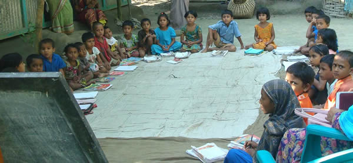
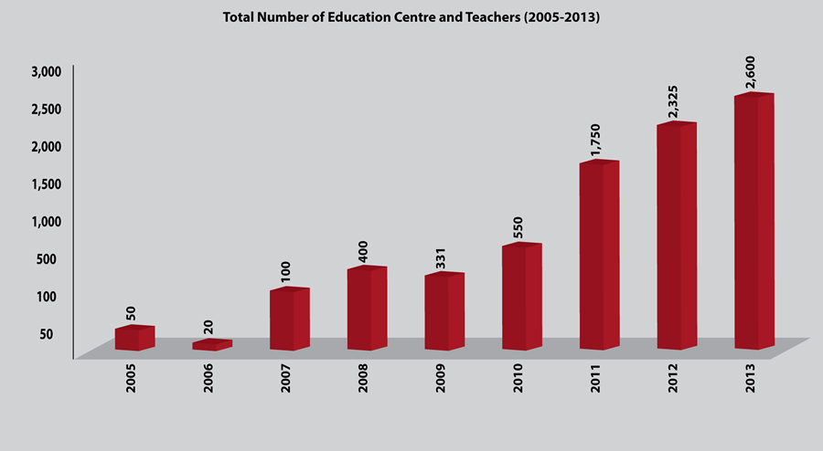
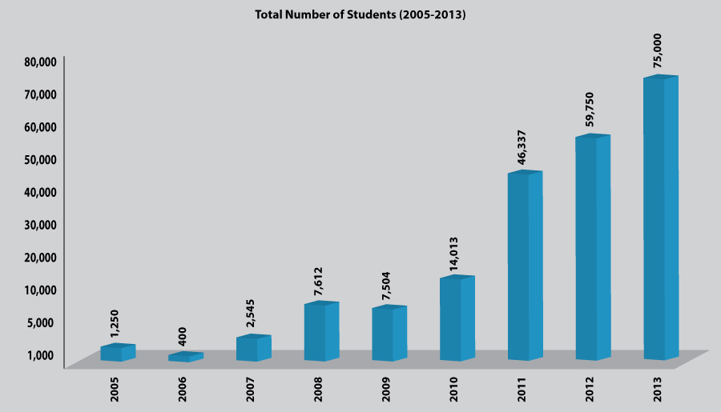

Shishok-Education Support Program

Bangladesh is one of the most densely populated countries where a big majority of the people lives in rural areas. Further, a significant portion of this rural population live under poverty and had been suffering from malnutrition, diseases, illiteracy, dropouts of school children and many other vices. Dropout of children from school is, in fact, the major barrier to eradicate illiteracy from the society in Bangladesh.
Despite huge enrolment of children in the elementary classes, it has been observed in the last few years that only half of the enrolled students sit for exams to pass the fifth grade. As a result, a lot of kids are dropping out of schools and act as an obstacle towards the development of the society and the nation as a whole. We have to get ourselves out of this curse which is dropping out of school.
Among many reasons of dropout of children from school, the poverty of parents is the prime one. This is a common sight that while some children are inside schools, many are playing without attending schools. When spoken to a few of them, they have expressed their reluctance to go to schools. The reason came very clear. Initially they joined school with a lot of eagerness. They were also very enthusiastic about the new environment, new friends and the fact that they have started schooling together. But as each class contains a huge number of students, accommodation and seating arrangement is inadequate, chaotic class environment, etc, make the teachers engage more in managing the uncontrollable children rather than to complete the lessons in the schools. The teachers are sometimes seen going from one end of the classroom to the other end with a stick in their hands, just to maintain a congenial teaching environment. All these add up to a child not getting the proper education that they should receive from the school. Teachers end up giving a lot of homework. Where the parents of these kids are illiterate, which is mostly common amongst the poor, it is almost impossible for them to get any support at home.
The above situation leaves the kid to go to school next day unprepared. Moreover, the illiterate parents, who are usually very tired after all days hard work; incapable of affording kerosene (fuel to light up the lantern) to last as long as they need to complete their school work, cannot provide any help to their kids. What happens to them? They end up in school the next morning with incomplete home work, resulting in punishment from the teacher in different forms: scolding, beating-up with a cane, kneeling-down, holding their ears and standing up on the bench. So the kid feels embarrassed, insulted and ashamed of him/herself and becomes a joke to the rest of the class mates. These insults and humiliation make them frustrated and leaves them with no more attraction for school. In this process, the kid decides not to attend the school, even before the family realizes and the kid is finally dropped out from the schooling system forever.
The problem mentioned above needs a solution. Since last couple of years we, in Centre for Development Innovation and Practices (CDIP) have experimented with an easy way out.
Back in 2005, we have started this program with only 10 Learning Centers (LC) in the remote villages under Brammanbaria district. From the very beginning, we have observed a huge response from the students and their guardians. The number of learning centers has gone up 2600 in 2013 with a participation of 75,000 underprivileged students. It is neither a new education program nor does it have a separate curriculum. Our main aim is to support the regular syllabus followed by the schools and prepare students for their classes for the next day. This program has massively helped students to grow interest towards school and has tremendously helped them to improve their results. More than 99% of them have been promoted from Class I to Class II; even a few have scored the top most marks in the class.
Now-a-days every village has house-wives, mothers or female college students who have some years of schooling. We have offered them only Tk. 500 per month to gather 20-25 poor kids of grade I and II at any house of the village to start a learning center and teach them for 2 hours each day, just to help them prepare their lessons and homework for the next day. In addition to our honorarium she also collects Tk. 20-30 per child per month, which increases the participation of the guardians and the local community to run the learning centers better. The arrangement has worked like a magic. The children have not only attended the extended classes for 2 hours in the afternoon, but also, they have increased class attendance at schools at their own interest.
We noticed a change in the attitudes and behavior of teachers who were basically mothers, daughters or house-wives of the village. Though these teachers initially accepted such a job of Tk.500 very casually but in the last few years, they have not only taken this seriously but also as a noble work and a social responsibility. They strongly feel that not a single person in her village should remain illiterate. This is a revolution in their lives and they are the brave fighters of a battle; a battle against illiteracy, a battle against dropouts of children from school.
These education volunteers/teachers have earned a lot of respect in the village and the society as a whole. They have a new recognition – recognition as a teacher in the society. Students, their guardians, people from the village, everyone respects them. Many unmarried teachers got married, with this new recognition and heightened social status, ever since this program has started. The non-marriage was in fact a matter of big anxiety and worry for their parents. Now these teachers say, “even if we migrate to a new village after marriage, we will open up a similar school there”.
As of June, 2013, we are running 2,600 Learning Centers (LC), where 2,600 teachers are employed and over 75,000 students of marginalized families are tutored, while CDIP spends Tk. 327 only for each learner this year and the parents spends around Tk. 250 only for each of their kids. It is found that the teachers are more empowered, honored and dignified in their respective community and determined to continue the learning centers, even if CDIP do not continue its supports. Further, the local people also are now enthusiastic to provide all material supports and continue learning centers, even in the absence of CDIP’s support.


The attitude of both teachers and local people make us believe that this initiative will turn it into a social movement in near future. While the initiative/program is very easy and inexpensive, anyone can do it. Any national or local organization, clubs or societies, individuals can take this initiative and help to accelerate social movement in Bangladesh. Meanwhile as many as 35 partner NGOs of PKSF and world famous NGO-MFI, namely ASA, Bangladesh have started implementing primary education programs following our “Model of arresting dropout of school children”. We hope this model will soon be replicated outside Bangladesh as well.